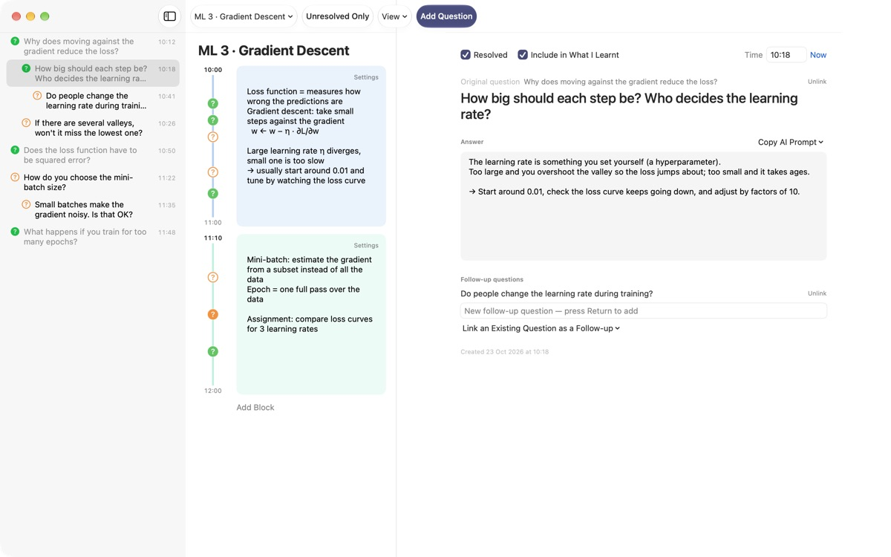
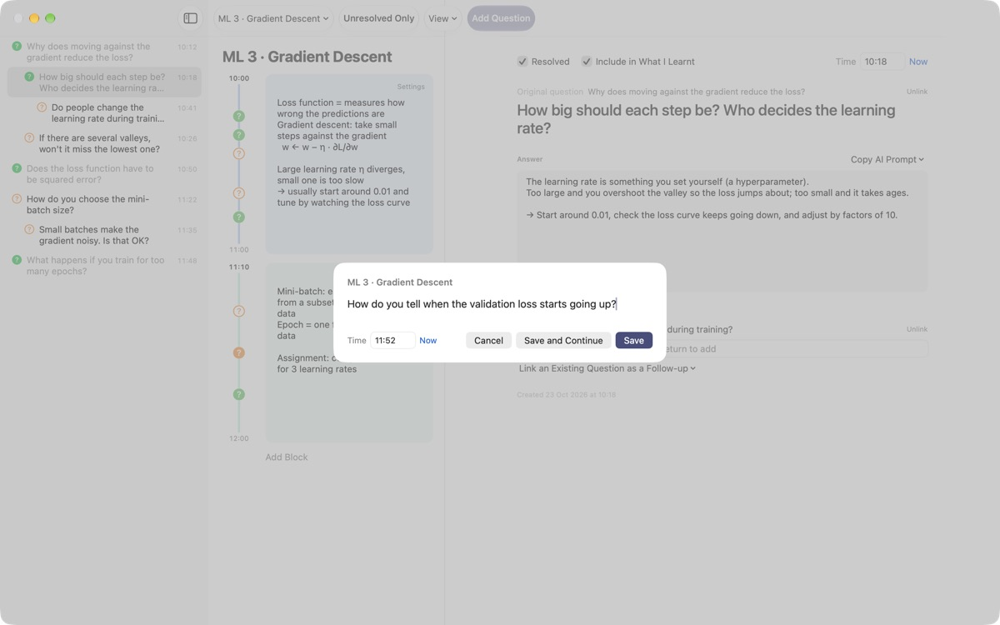
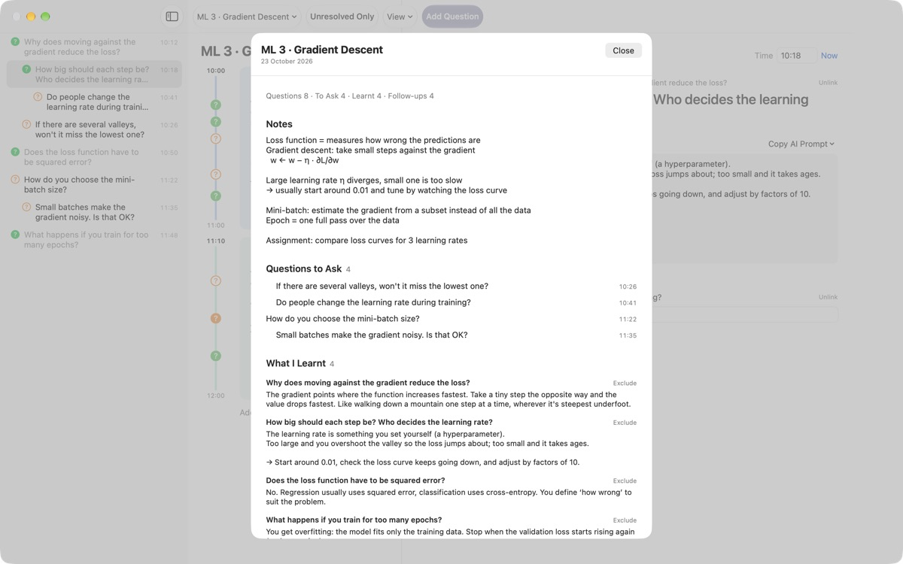
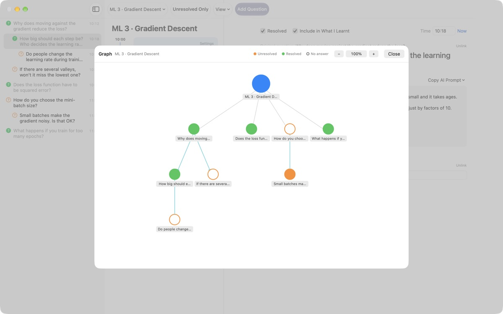

Don't let a mid-lecture
question slip away
Press ⌘⇧N, type one line, and the question lands beside your notes from that minute. Keep listening. Find the answer later.
For macOS 14 or later. No account; everything stays on this Mac.

Try it here
You're halfway through a machine learning lecture. Type a question and save it, and a ? appears beside the block for that time. Change the time to one outside the blocks and a new block appears to hold it.
When the lecture ends, can you still remember the question?
The moment you think "hang on, why?" the lecturer has already moved on. The question mark in the margin loses track of which explanation it came from, and it never gets answered. LectureQ pins each question to your notes from that moment and keeps it in front of you until you've worked it out.
Ask without missing the next sentence
Open the input window with Add Question in the toolbar or ⌘⇧N. The time fills itself in. Return saves, and ⌘Return saves and gets you ready for the next one.
Each question shows up as a ? beside the time block it belongs to, so later you can see exactly which part of the lecture it came from.

Answered questions become what you've learnt
Write the answer in your own words, mark it resolved, and it joins What I Learnt in the summary. Anything still open stays under Questions to Ask, so your list for the next seminar builds itself.Copy AI Prompt in the question details puts a ready-made prompt on the clipboard, filled in with the lecture name and your notes from that moment. Paste it into whichever AI service you already use.

See where your thinking went
Follow-up questions sit indented under the question they came from, and the graph links them with arrows. Click a node to jump straight to that question.
In Learning Status you can note where you are now, where you'd like to be when the course ends and what you want to learn, then compare.

Three steps to get started
- 1
Create a lecture
Add one from the lecture menu on the left of the toolbar, or import a conversation saved as Markdown.
- 2
Write it down as it comes
Press
⌘⇧N. One line is enough, and the time is filled in. - 3
Answer it later
Write the answer and click the ? to mark it resolved. It moves to What I Learnt.
Keyboard shortcuts
- ⌘⇧N
- Add a question
- Return
- Save
- ⌘Return
- Save and write the next one
- Esc
- Cancel
- ⌘1
- Summary: questions to ask, what you've learnt, notes
- ⌘2
- Graph: original questions and their follow-ups
- ⌘3
- Time Blocks: every lecture's blocks in time order
- ⌘4
- Learning Status
- ⌘+ · ⌘- · ⌘0
- Larger text, smaller text, default size
You'll find all of these in the View menu as well.
Every feature is free
Free
- Quick capture and time block notes
- Follow-up questions and the graph
- Summary, time block overview and Learning Status
- Five-step AI prompts, copied to the clipboard
- Import conversations from Markdown
Tip the developer
- Send a small tip from Settings if the app helps you
- A tip doesn't unlock anything extra
Everything works the same whether you tip or not.
No adverts, no account. Your notes stay on this Mac.
Questions
What do the colours of the ? mean?
In the list, an empty orange circle is a question you haven't resolved yet and a filled green one is resolved. Click the ? to switch between them, and turn on Unresolved Only in the toolbar to see only open questions. Beside a time block, the colour shows whether it's resolved and a filled circle means an answer has been written.
How do time blocks work?
Click Add Block and a new block starts at that moment, while the previous one is trimmed to end there. If you add a question at a time no block covers, a block is created around it for you. Use Settings at the top right of a block to change its colour, start time and length, or delete it. Once you delete a block yourself, that lecture stops creating blocks automatically.
What's the difference between Resolved and What I Learnt?
When you tick Resolved in the question details, you can also choose whether it counts towards What I Learnt. Only resolved questions you've included appear there. You can also exclude or re-add them from the summary, and the answer stays put either way.
How do the AI prompts work?
In the question details, open Copy AI Prompt next to Answer and pick a step: Refine the Question, Find the Answer, Question the Answer, Draw Out Follow-ups or Get My Answer Graded. A prompt filled in with the lecture name, your notes from that moment, your learning status and the original question is copied to the clipboard. The prompt text itself is currently in Korean; most AI services will still understand it, and you can ask for the reply in English. Get My Answer Graded needs your own answer in the Answer field first. The app never talks to an AI service itself.
Can I import a conversation saved as Markdown?
Choose Import from Markdown… in the lecture menu. # Title becomes the lecture name, and in each ## Section the first question is the original question and those after it are follow-ups. Lines from the first speaker in the file become questions, and lines from anyone else become the answer to the question just before. The original file is never changed.
How do I delete a question or a lecture?
Right-click a question in the list and choose Delete. For a lecture, use Delete Current Lecture in the lecture menu; its questions and blocks go with it. This can't be undone, so back up anything important first.
Where is my data stored, and how do I back it up?
Everything stays on this Mac and is never uploaded. To back up, quit the app and copy the whole folder ~/Library/Containers/com.lectureq.LectureQ/Data/Library/Application Support/LectureQ/ including the -wal and -shm files. The app only sends anonymous usage statistics, such as the app version and the days it was opened, never what you write.
The text is too small.
Use ⌘+ to make it bigger, ⌘- to make it smaller and ⌘0 to reset. It goes from 85% to 200% and remembers your setting.
Which Macs does it run on?
Any Mac with macOS 14 or later. The source code is public on GitHub at M1zz/LectureQ.
Something isn't working. Who should I tell?
Send feedback from Settings (⌘,) in the app, or email the address below. Include your macOS version and what you were doing when it happened, and we can look into it more quickly.
Questions or feedback? Write to mizzking75@gmail.com.